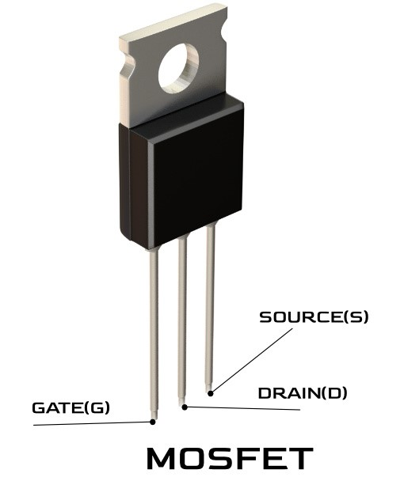

A transistor is a semiconductor device that controls the flow of electrical current, acting as either an amplifier or a switch. It's a fundamental component in modern electronics, found in virtually all electronic devices from radios to computers.A transistor is a three-terminal semiconductor device used to amplify, switch, or control electrical signals and power.
1.Function:
Amplification:
Transistors can amplify weak electrical signals, making them stronger for use in various electronic circuits.Amplification is the process of increasing the strength of an electrical signal without changing its original content. In electronics, transistors are commonly used as amplifiers, where a small input current or voltage at the base (in BJT) or gate (in FET) controls a much larger current flowing through the collector-emitter or drain-source path.
Switching:
Transistors can act as electronic switches, turning electrical current on or off based on input signals.Switching in electronics refers to the use of a transistor to control the flow of current in a circuit, acting like an electronic on–off switch. By applying a small current or voltage to the transistor’s base (BJT) or gate (FET), the device can either allow a larger current to flow between the collector and emitter (BJT) or drain and source (FET), or completely block it.
2. Construction:
Transistors are made from semiconductor materials like silicon or germanium, with three terminals: the emitter, base, and collector.
These terminals are arranged in a way that allows a small current or voltage applied to the base to control a larger current flowing between the emitter and collector.
Transistor switching is widely used in digital circuits, logic gates, microcontrollers, relay driving, and power control applications, where rapid and precise control of current is required.
3. Importance:
Transistors are essential for the functioning of modern electronics.
They are used in countless applications, from radios and computers to more complex integrated circuits.
They are a key invention of the 20th century, revolutionizing electronics.
BJTs use both electrons and holes as charge carriers.A BJT (Bipolar Junction Transistor) is a type of transistor that uses both electrons and holes as charge carriers, hence the term “bipolar.”It consists of three layers of semiconductor material forming two p–n junctions, with three terminals called Emitter (E), Base (B), and Collector (C). BJTs are available in NPN and PNP types, depending on the arrangement of the semiconductor layers.
In operation, a small current at the base controls a much larger current flowing from the collector to the emitter (in NPN) or from emitter to collector (in PNP).They are further classified into NPN and PNP types.
This property allows BJTs to be used for amplification, switching, and signal control in electronic circuits. They are widely used in audio amplifiers, digital logic circuits, power regulation, and control systems.BJTs are widely used for amplification and switching applications.
2. Field-Effect Transistors (FETs):
A FET (Field Effect Transistor) is a unipolar transistor that uses only one type of charge carrier—either electrons (in N-channel) or holes (in P-channel)—to conduct current.FETs use a single type of charge carrier (either electrons or holes).
It has three terminals: Gate (G), Source (S), and Drain (D). Unlike BJTs, which are controlled by current, FETs are voltage-controlled devices, where a voltage applied to the gate regulates the current flowing between the source and drain.There are two main types of FETs: Junction Field-Effect Transistors (JFETs) and Metal-Oxide-Semiconductor Field-Effect Transistors (MOSFETs).
FETs are widely used in amplifiers, switching circuits, voltage-controlled resistors, and digital electronics due to their high input impedance, low noise, and fast switching capabilities. Variants of FETs include JFET (Junction FET) and MOSFET (Metal-Oxide-Semiconductor FET), each optimized for specific applications.
3.MOSFET:

A MOSFET (Metal-Oxide-Semiconductor Field-Effect Transistor) is a type of FET that uses an electric field to control the flow of current between its terminals. It has three main terminals: Gate (G), Drain (D), and Source (S), with an optional Body (B) terminal in some configurations.
The gate is separated from the channel by a thin insulating oxide layer, which allows the MOSFET to be voltage-controlled with very high input impedance.MOSFETs are widely used in power electronics, switching regulators, digital circuits, amplifiers, and microprocessors because of their fast switching speed, low on-resistance,and efficiency.
They come in enhancement and depletion modes and in N-channel and P-channel types, offering flexibility for different circuit designs.
4.IGBT:
An IGBT (Insulated Gate Bipolar Transistor) is a power semiconductor device that combines the high input impedance and fast switching of a MOSFET with the high current and voltage handling capability of a BJT.
It has three terminals: Gate (G), Collector (C), and Emitter (E). The gate controls the flow of current between the collector and emitter, allowing it to act as a high-efficiency electronic switch.
iGBTs are widely used in high-power applications such as motor drives, induction heating, inverters, UPS systems, and renewable energy converters, where both fast switching and high voltage/current capability are required
5.IGCT:
An IGCT (Integrated Gate-Commutated Thyristor) is a high-power semiconductor device designed for fast switching in industrial and utility applications.
It combines the advantages of thyristors and gate-controlled devices, allowing large currents and high voltages to be switched efficiently with precise gate control. IGCTs have three main terminals: Gate (G), Anode (A), and Cathode (K), and they can turn on and off quickly compared to conventional thyristors.
IGCTs are widely used in high-voltage DC transmission (HVDC), motor drives, power converters, and large industrial drives, where both high power handling and fast switching are critical.
6.Darlington Transistor:
A Darlington transistor is a composite semiconductor device that consists of two bipolar junction transistors (BJTs) connected together to provide a very high current gain.
Darlington transistors are widely used in high-gain amplifier circuits, relay drivers, motor control circuits, and switching applications, where a small input current needs to control a large load.
They combine the advantages of BJTs with enhanced current amplification, but they typically have a higher voltage drop across the collector-emitter terminals compared to a single transistor.
7.Photo Transistor:
A phototransistor is a type of transistor that responds to light instead of an electrical input at the base. When light falls on its base-collector junction, it generates a small current, which is then amplified by the transistor, allowing a larger current to flow between the collector and emitter.
his makes phototransistors light-sensitive switches or amplifiers.Phototransistors are widely used in optical sensors, light detection circuits, remote control receivers, automatic lighting systems, and safety devices.
They are faster and more sensitive than photodiodes because they amplify the photocurrent internally, eliminating the need for additional amplification in many circuits.
8.Tunnel-Transistor:
A tunnel transistor is a high-speed semiconductor device that operates based on the principle of quantum tunneling, similar to a tunnel diode.It is heavily doped to create a very thin depletion region, allowing charge carriers to “tunnel” through the energy barrier even at low voltages.
This gives the tunnel transistor a region of negative resistance, where an increase in voltage can lead to a decrease in current.
Tunnel transistors are primarily used in very high-frequency circuits, microwave applications, and fast switching devices, where conventional transistors cannot operate efficiently. Their ultra-fast response makes them suitable for logic circuits, oscillators, and RF amplifiers.
Applications:-
Digital Logic Circuits:
Transistors are the building blocks of digital circuits, forming logic gates like AND, OR, and NOT gates.
Signal Amplification:
Transistors can amplify weak electrical signals, making them essential in audio amplifiers for stereos and headphones, as well as in radio frequency amplifiers for transmitters and receivers.
Supply Switching:
Transistors are widely used to control the flow of electricity in power supplies, regulating voltage and current.
Control:
In power electronics, transistors are used to control the speed and direction of electric motors, a key application in industrial automation, electric vehicles, and household appliances.
Oscillators:
Transistors can generate oscillating electrical signals, which are used to create clock signals in digital devices and in radio frequency oscillators for communication systems.
Voltage Regulation:
An oscillator is an electronic circuit that generates a periodic, continuous waveform without requiring any external input signal.